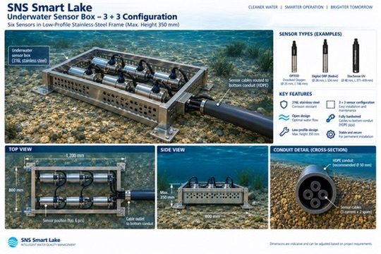
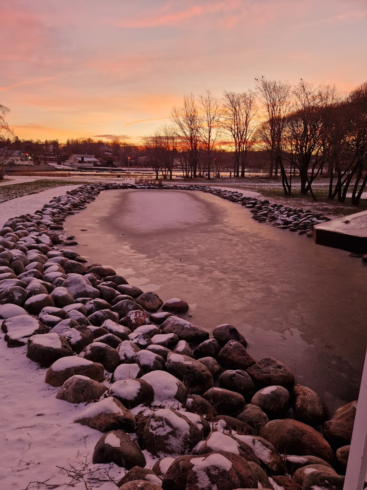
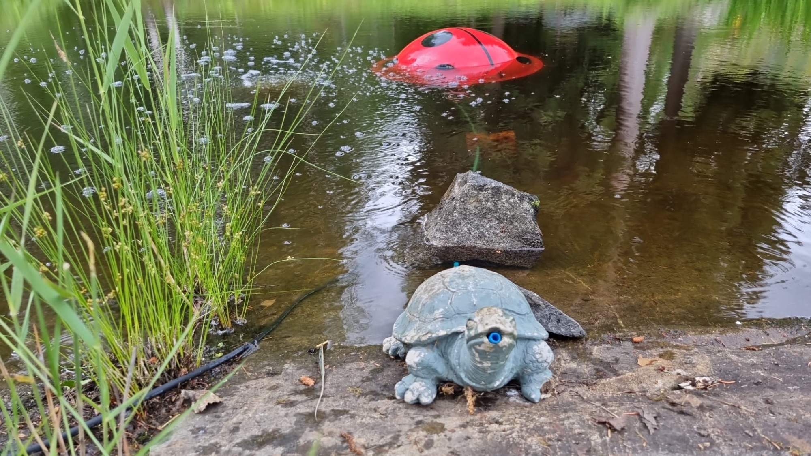

Smart Lake · älykäs vedenlaadun hallinta
Järvi jota näytteistetään kahdesti vuodessa on järvi jota kukaan ei tarkkaile.
Syvänteen happi romahtaa viikoissa ja palautuu viikoissa. Kaksi pistokoetta vuodessa ei näe sitä, eikä se tue lupaa, kunnostusväitettä eikä krediittiä. Smart Lake istuu pohjalla ja mittaa jatkuvasti — kuusi anturia yhdessä vahvistetussa rungossa, rakennettuna pysymään siellä.
Vedenalainen anturirunko

Smart Lake -vedenalainen anturirunko, 3+3-kokoonpano. Mitat ovat ohjeellisia ja sovitetaan hankkeen vaatimuksiin.
Valmistajan dokumentti
Miksi se on rakennettu näin
Matala profiili
Enimmäiskorkeus 350 mm. Pohjalla matalana istuva yksikkö on vähemmän alttiina jäälle, verkoille ja venenliikenteelle kuin kelluva tai ankkuroitu asennus.
Avoin runko
Rakenne on avoin, jotta vesi kulkee sen läpi. Suojatussa kotelossa oleva anturi mittaa koteloa, ei vesistöä.
316L-ruostumaton teräs
Korroosionkestävä laatu, valittu pysyvään upotettuun asennukseen eikä mittauskampanjaan.
3+3-kokoonpano
Anturit kahdessa kolmen anturin ryhmässä, joten yksikköä voi huoltaa tai anturin vaihtaa nostamatta ja käyttöönottamatta koko runkoa uudelleen.
Kaapelointi suojaputkeen
Anturikaapelit reititetään pohjaan asennettuun suojaputkeen — HDPE, suositeltu Ø 50 mm — sen sijaan että ne kulkisivat irrallaan pohjan poikki.
Varakapasiteetti ensimmäisestä päivästä
Kaapelivedot mitoitetaan kolme käytössä ja kaksi varalla, joten myöhemmin lisätty parametri ei tarkoita uutta kaapelivetoa.
Anturit — esimerkkejä
| Anturi | Mittaa | Halkaisija | Pituus |
|---|---|---|---|
| OPTOD | Liuennut happi | 25 mm | 166 mm |
| Digital ORP | Redox-potentiaali | 25 mm | 124 mm |
| StacSense UV | UV-absorbanssi | 46 mm | 371–835 mm |
Esimerkkejä anturityypeistä joille runko on mitoitettu. Parametrijoukko valitaan hankkeittain — runkoon mahtuu kuusi.
Kentällä

Ålönlahti, Parainen — SNS:n oma pilotti, käynnissä. Ensimmäinen tämän järjestelmän omalla nimellä mitattava referenssi.

Ladybug-ilmastusyksikkö lampiasennuksessa.
Kenelle tämä on
Vesialueen omistajat ja kunnat
Vesistöt, joissa on hajuvalituksia, kalakuolemia tai lupaan liitetty kunnostusvelvoite — joissa kysymys on paraneeko oikeasti mikään.
Kunnostushankkeet
Kun toimenpide on tehty ja sen vaikutus on osoitettava vuosien ajalta. Jatkuva mittaus on se joka erottaa kunnostuksen asennuksesta.
Krediitointihankkeet
Kun mitatusta muutoksesta tulee liikkeeseen laskettava yksikkö, seurantatietue on se omaisuuserä. Krediitit hoitaa OceanSite Oy; mittaus tulee täältä.
Käyttötekniset tiedot ja referenssien tila
Käyttötekniset tiedot. IP68, suurin paine 5 bar (noin 50 m syvyys), käyttöjännite 4,8–24 V. Tiedonsiirto: Modbus RS-485 (SDI-12 valinnaisena). OPTOD-happianturin tarkkuus ±0,1 mg/l, resoluutio 0,01. Järjestelmä mittaa happea, ORP:tä, pH:ta, lämpötilaa, sameutta, johtokykyä ja virtausta muutaman sekunnin välein PLC-ohjauksella, pilvitallennuksella (Azure) sekä hälytyksillä ja hallintanäkymillä. Säilytysaikaa ja huoltoväliä ei ole vielä julkaistu.
Aloita lähtötasosta.
Yksi vesistö, yksi dokumentoitu lähtöpiste, ennen kuin mitään asennetaan.
Mitoita lähtötaso